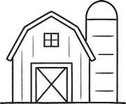
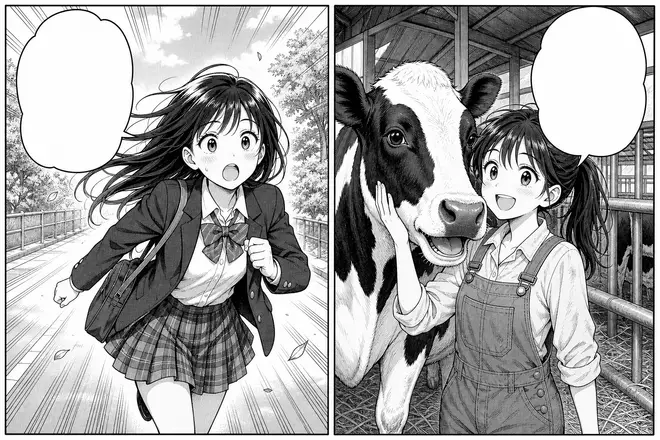
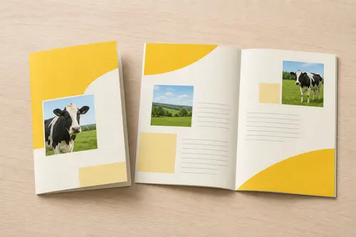

ミルジョブとは
牧場ではたらく人を、
もっと身近に。
ミルジョブは、北海道の牧場と酪農の関係団体が集まってつくった「北央酪農キャリア協議会」が運営しています。牛乳やチーズが届くまでに、どんな人がどんな仕事をしているのか。中学生・高校生・大学生と、その家族や先生に向けて、牧場の仕事を知る入口をつくっています。
- 知るこのサイト、冊子、学校への出前授業で、7つの職種を紹介しています。
- 試す「1日ファームワーク」で、加盟牧場の仕事を実際に体験できます。
- つなぐ就職の相談を受け、加盟牧場や研修先を紹介しています。
3つの数字

214戸加盟牧場- 1,860人のべ参加者
- 327人就職した先輩
- 加盟牧場
- 職場体験や就職の相談で、受け入れに協力してくれている牧場の数です。
- のべ参加者
- 2016年の設立から、1日ファームワークと出前授業に参加した人の合計です。
- 就職した先輩
- 協議会の紹介や体験をきっかけに、酪農の仕事に就いた人の数です。
2026年3月末時点の協議会の集計です。
まんが 牛舎の朝

ちこくする！ 牛といる
のが好き
寝坊して学校へ走る高校生が、近道のつもりで通りかかった牛舎で、朝の搾乳に立ち会う。その日から少しずつ、牛のそばにいる時間が増えていく――。酪農の朝を、2コマから始まるまんがで描きました。
冊子を読んでみる
2026年度版 無料でお送りします

- 7つの職種の仕事と、就くまでの道のり
- 働く人10人のインタビュー
- 214戸の加盟牧場の一覧（地域別）
- 1日ファームワークの申し込み方
A4判・32ページ。
学校でまとめて使うときは、部数をお知らせください。
先生・保護者の方へ
出前授業
協議会の職員と、牧場で働くスタッフが学校にうかがいます。1回50分で、仕事の話と、搾乳の道具にふれる時間を組み合わせます。道内の中学校・高校が対象で、費用はかかりません。
進路の相談
酪農の仕事に興味のある生徒さんの、学校選びや就職の相談に応じます。農業系の学科でなくても、牧場で働く道はあります。
保護者の方へ
休みの取り方や住まい、研修の内容は、牧場によって違います。気になることは、申し込みの前でも遠慮なくおたずねください。職場体験には、保護者の方も一緒に参加できます。
運営団体
| 名称 | 一般社団法人 北央酪農キャリア協議会 |
|---|---|
| 設立 | 2016年4月 |
| 代表者 | 理事長 柏原 佳世子 |
| 所在地 | 〒089-1352 北海道美牧町北野1条4丁目8-3 |
| 電話 | 0155-83-6420 平日 9:00〜17:00 |
| FAX | 0155-83-6421 |
| メール | info@miljob-hokuo.jp |
| 会員 | 加盟牧場214戸、関係団体・事業所18 |
| 事業 | 酪農の仕事の紹介、職場体験の運営、出前授業、就職の相談と紹介 |